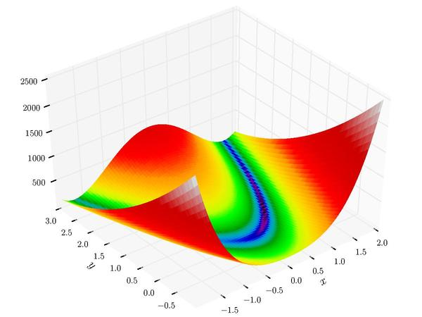

Optimizer Visualizations
Visualizations help us see how different algorithms deal with simple situations like: saddle points, local minima, valleys etc, and may provide interesting insights into the inner workings of an algorithm.
Rosenbrock Function
The Rosenbrock function, also known as the banana function, is a non-convex function used as a performance test problem for optimization algorithms.
Characteristics
- Global minimum at (1.0, 1.0)
- Located inside a long, narrow, parabolic shaped flat valley
- Finding the valley is trivial, but converging to the global minimum is difficult
Optimization algorithms might pay a lot of attention to one coordinate, and struggle following the valley which is relatively flat.


Rastrigin Function
The Rastrigin function is a non-convex function used as a performance test problem for optimization algorithms. It is a typical example of non-linear multimodal function.
Characteristics
- Global minimum at (0.0, 0.0)
- Large search space with a large number of local minima
- Highly multimodal, making it difficult for local optimization algorithms
Finding the minimum of this function is a fairly difficult problem due to its large search space and its large number of local minima.
Visualization Script
Download Script
You can use the following Python script to generate visualizations for different optimizers.
Make sure to install the required dependencies: torch, hyperopt, torch-optimizer, matplotlib, numpy.
# Example usage:
# python scripts/viz_optimizers.py
# This script will generate visualization plots in the 'docs/' directory
# showing how different optimizers traverse the loss landscape.